11.1 DeZero 기초: 딥러닝과 자동 미분의 세계
인공신경망 코딩 실습을 위해 이 책에서 사용할 초경량 딥러닝 프레임워크인 DeZero(디제로)의 핵심 원리와 사용법을 공부합니다.
그림 11-1-1 지니가 들려주는 DeZero 상자 속의 장난감 블록(Variable, Function) 조각들을 끼워 맞춰 보며 딥러닝 연산을 배우는 도로시와 토토
[강의 스크립트] 십일점일 장에서는 딥러닝의 자동 미분 메커니즘을 가장 투명하게 이해할 수 있는 교육용 초경량 프레임워크인 디제로의 기초를 배웁니다. 화면의 그림에서 보듯, 상자 안의 변수와 함수 블록들을 연결하여 거대한 계산 그래프를 구성하고, 역방향으로 미분을 전파해 나가는 기본 작동 원리를 명쾌하게 정리해 보겠습니다.
파이토치(PyTorch)와 쌍둥이처럼 닮아 매우 직관적인 DeZero의 기본 다차원 배열 변수(Variable) 선언법과 순전파/역전파 계산 메커니즘을 요정 지니의 블록 놀이 비유와 깊이 있는 코드 분석으로 완전 정복해 봅시다!
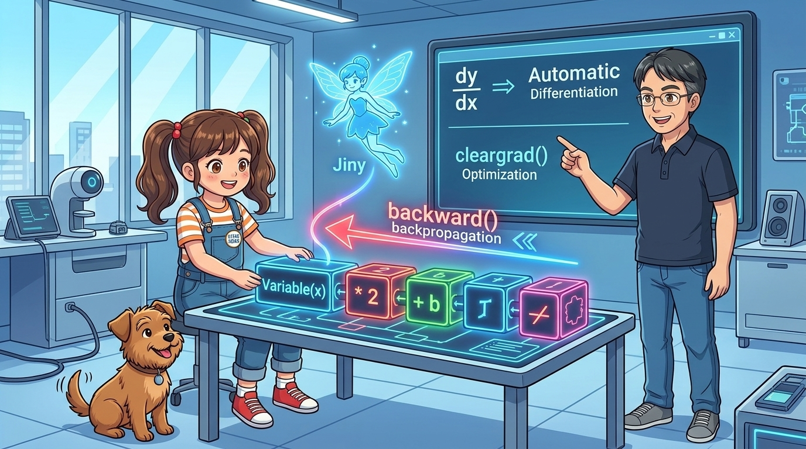
그림 11-1-2 순전파 연산 블록들을 차례로 연결하는 도로시와, 계산 그래프의 끝에서부터 반대 방향으로 역전파(backward()) 광선을 쏘아 기울기를 채워 넣는 지니, 그리고 자동 미분과 cleargrad() 최적화의 원리를 설명하는 이호진 교수님[강의 스크립트] 디제로는 현대 딥러닝의 표준인 파이토치와 설계 철학이 완벽히 일치합니다. 그림에서 보듯 순방향으로 블록을 쌓아 계산을 수행하고 나면, 최종 출력에서부터 백워드 호출 한 번으로 계산 그래프의 사슬을 거슬러 올라가며 모든 매개변수의 기울기를 자동으로 구해냅니다. 이 순전파와 역전파의 메커니즘을 코드로 직접 체험해 봅시다.
11.1.1 DeZero란 무엇인가?
강화학습에서 상태 공간이 무한히 넓어지면, 테이블로 가치 함수를 저장하는 대신 인공신경망을 함수 근사기(Function Approximator)로 사용해야 합니다.
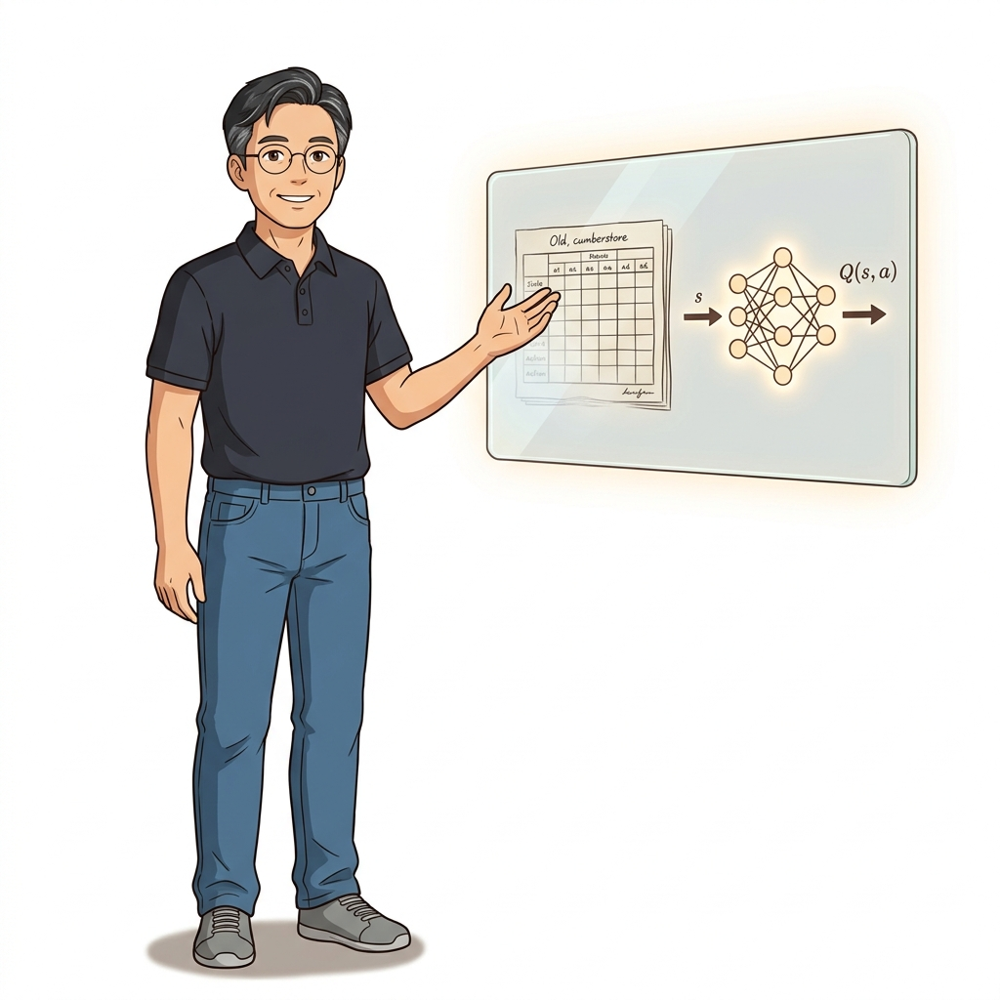
[강의 스크립트] 십일점일점일 절에서는 디제로의 탄생 배경을 살펴봅니다. 강화학습의 상태 공간이 연속적인 실수이거나 무한히 넓어지면 표 형태로는 가치를 저장할 수 없습니다. 이때 필요한 것이 바로 복잡한 상태를 입력받아 가치를 매끄럽게 추정해 주는 인공신경망 함수 근사기입니다.
신경망을 학습시키려면 수많은 가중치 파라미터에 대한 오차의 미분(기울기, Gradient)을 오차역전파법(Backpropagation)으로 빠르게 계산해야 합니다.
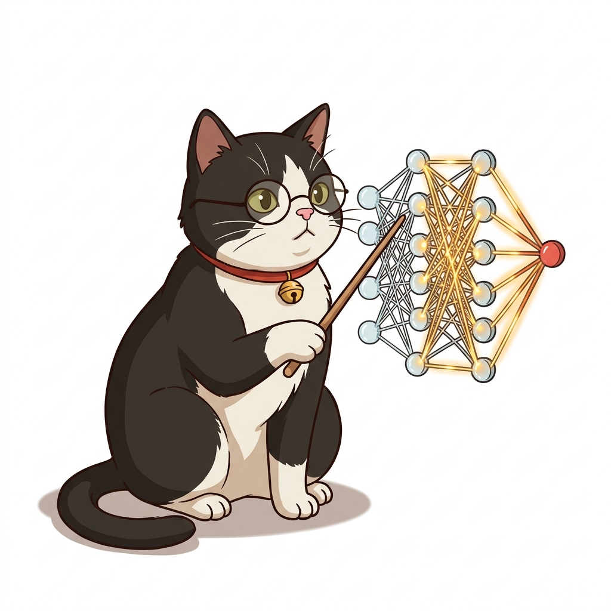
[강의 스크립트] 인공신경망이 올바른 가치를 추정하도록 학습시키려면 수많은 가중치 매개변수를 오차를 줄이는 방향으로 조금씩 수정해야 합니다. 이때 출력 오차에 대한 각 매개변수의 기울기를 연쇄 법칙에 따라 고속으로 역전파하여 계산하는 오차역전파법이 필수적으로 요구됩니다.
이 복잡한 계산을 자동으로 수행해 주는 도구가 바로 딥러닝 프레임워크입니다.
[강의 스크립트] 인간이 수백만 개의 수식에 대해 손으로 편미분을 직접 계산하는 것은 불가능합니다. 컴퓨터가 계산 과정을 내부적으로 기억해 두었다가 역방향으로 미분을 단숨에 유도해 주는 소프트웨어 도구가 바로 딥러닝 프레임워크입니다.
이 강의에서는 『밑바닥부터 시작하는 딥러닝 3』에서 직접 구현된 교육용 딥러닝 프레임워크인 DeZero를 사용합니다.
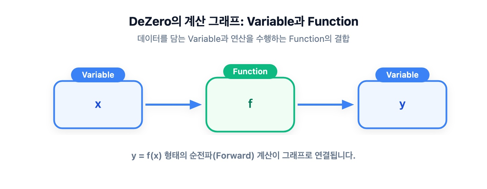
그림 11-1-3 『밑바닥부터 시작하는 딥러닝 3』과 초경량 파이토치 스타일 프레임워크 DeZero[강의 스크립트] 우리는 교육용 프레임워크인 디제로를 채택합니다. 디제로는 복잡하고 무거운 엔지니어링 코드 뒤에 숨지 않고, 순수한 파이썬과 넘파이만으로 자동 미분의 뼈대를 투명하게 보여주기 때문에 딥러닝의 심장부를 직관적으로 이해하기에 최적입니다.
[!TIP]
🧠 DeZero 심화 학습 안내:
dezero.ai.jiny.devDeZero 프레임워크의 내부 동작 원리(자동 미분 엔진, 계산 그래프 DAG, 고차 미분, 신경망 계층 구현)를 1단계부터 60단계까지 한 줄 한 줄 직접 파이썬으로 구현하며 학습할 수 있는 전용 강의 사이트가 개설되어 있습니다!
- 🌐 공식 학습 사이트: https://dezero.ai.jiny.dev
- 📚 주요 학습 내용: 수치 미분부터 역전파 자동화, 고차 미분, CNN, RNN, LSTM까지 DeZero 60단계 완전 구현
DeZero의 밑바닥 구조를 깊이 있게 파악해 두면, 강화학습의 신경망 모델을 훨씬 더 직관적이고 탄탄하게 다룰 수 있습니다.
[강의 스크립트] 디제로 프레임워크의 내부 메커니즘을 기초 수치 미분부터 60단계 신경망 계층까지 한 줄 한 줄 직접 구현해 보고 싶으신 분들을 위해 디제로 에이아이 지니 닷 데브 전용 학습 사이트가 함께 마련되어 있으니 적극 참고하시기 바랍니다.
[!NOTE] 파이토치(PyTorch)와의 관계: DeZero는 파이토치와 API 설계 철학이 99% 동일합니다:
- 파이토치의
torch.Tensor↔ DeZero의dezero.Variable- 파이토치의
loss.backward()↔ DeZero의y.backward()- 파이토치의
optimizer.zero_grad()↔ DeZero의x.cleargrad()따라서 DeZero의 원리를 명확히 이해하면 파이토치나 텐서플로 코드를 자유자재로 다룰 수 있는 탄탄한 딥러닝 내공이 갖추어집니다.
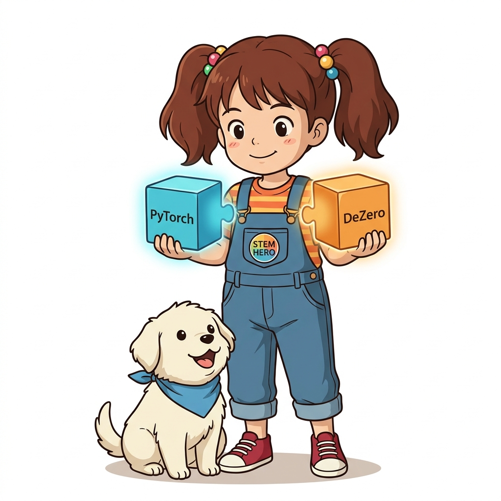
[강의 스크립트] 파이토치와의 관계를 주목해야 합니다. 디제로의 베리어블은 파이토치의 텐서와 대응되고, 백워드와 클리어그레드 역시 완벽히 동일한 동작 구조를 갖습니다. 즉, 디제로를 익히는 것은 곧 파이토치를 다루는 뼈대를 그대로 마스터하는 것과 같습니다.
11.1.2 DeZero의 기본 사용법과 자동 미분
먼저 터미널에서 DeZero를 설치합니다:
pip install dezero
[강의 스크립트] 십일점일점이 절에서는 디제로의 설치와 기본 사용법을 다룹니다. 화면의 명령어처럼 핍 인스톨 디제로를 실행하면 단 몇 초 만에 파이썬 가상환경에 프레임워크가 준비됩니다.
1) 넘파이를 감싸는 마법의 상자: Variable
DeZero의 핵심 클래스는 Variable입니다. Variable은 넘파이의 다차원 배열(np.ndarray)을 내부에 품고 있으면서, 어떤 연산을 거쳐 만들어졌는지 계산 이력(계산 그래프)을 추적합니다:
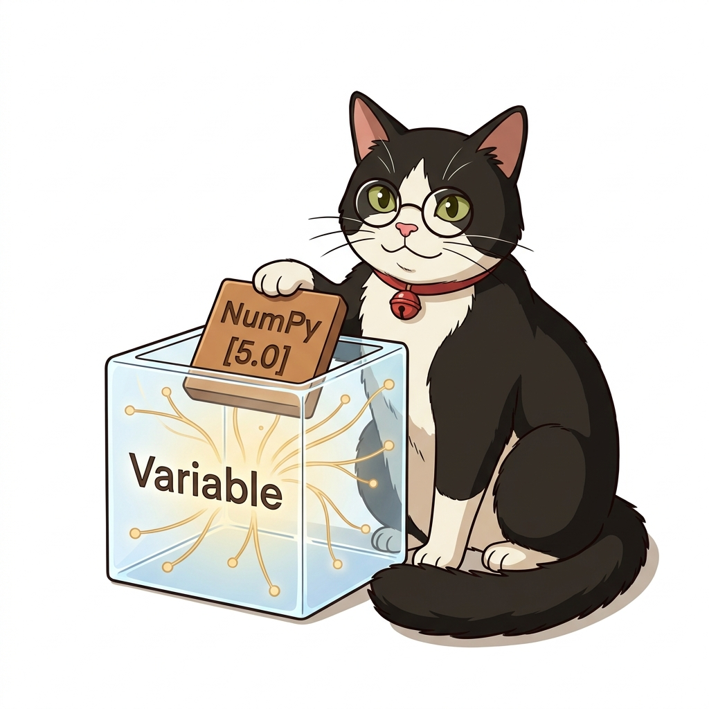
[강의 스크립트] 디제로의 가장 중요한 데이터 상자는 베리어블 클래스입니다. 베리어블은 순수한 넘파이 다차원 배열 데이터를 속성으로 품고 있으면서, 이 데이터가 어떤 함수를 거쳐 탄생했는지에 대한 연산 이력을 계산 그래프 형태로 꼼꼼히 기록해 둡니다.
import numpy as np
from dezero import Variable
x_np = np.array(5.0)
x = Variable(x_np) # ❶ 넘파이 스칼라를 Variable 인스턴스로 감싸기
y = 3 * x ** 2 # ❷ 넘파이 배열처럼 직관적인 사칙연산 수행
print(y)
출력 결과:
variable(75.0)
[강의 스크립트] 코드를 보면 넘파이 스칼라 오점영을 베리어블 인스턴스로 감싸서 엑스를 선언합니다. 그리고 삼 곱하기 엑스의 제곱을 수행하면 보통의 숫자처럼 직관적으로 연산되어 칠십오점영이라는 결과가 도출됩니다. 내부적으로는 계산 그래프가 형성된 상태입니다.
2) 기적의 한 줄: y.backward()와 역전파
위의 연산은 수학적으로 y = 3x2입니다.
이 함수를 x로 미분하면 도함수는 다음과 같습니다:
dy / dx = 6x
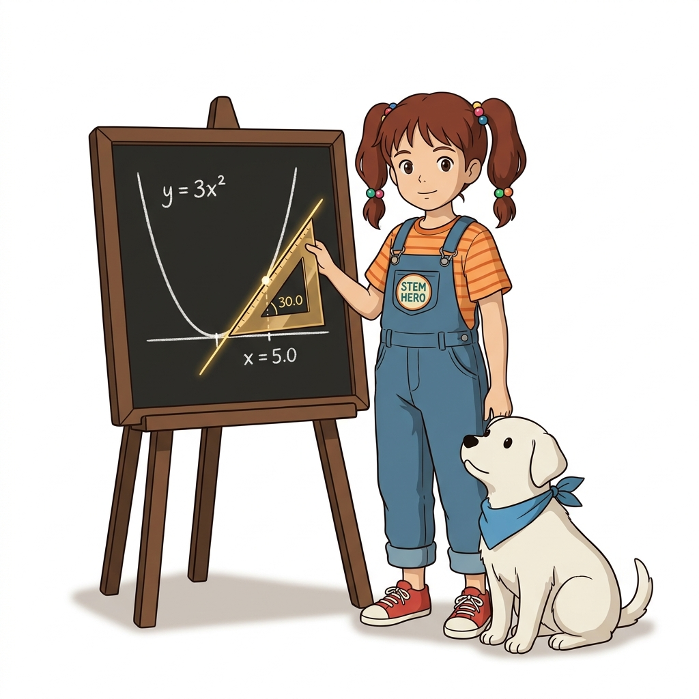
[강의 스크립트] 이 연산의 수학적 의미를 들여다봅시다. 와이는 삼 엑스 제곱이므로, 엑스에 대해 미분한 도함수는 육 엑스가 됩니다. 접선의 기울기를 나타내는 이 미분 공식에 엑스는 오점영을 대입하면 정답은 삼십점영이어야 합니다.
여기에 x = 5.0을 대입하면 이론적인 접선의 기울기는 30.0이 나와야 합니다.
DeZero가 이를 스스로 계산해 내는지 확인해 봅시다:
y.backward() # ❸ 계산 그래프를 거슬러 올라가는 역전파 실행!
print(x.grad) # ❹ x 변수에 누적된 기울기(Gradient) 출력
출력 결과:
variable(30.0)
손으로 미분 공식을 유도하지 않아도, y.backward() 단 한 줄을 호출하자마자 컴퓨터가 계산 그래프를 역방향으로 순회하며 연쇄 법칙(Chain Rule)을 적용해 정확히 30.0을 뽑아냅니다!
[강의 스크립트] 이제 기적의 한 줄인 와이 점 백워드를 실행합니다. 사람이 미분 공식을 풀지 않아도, 컴퓨터가 연쇄 법칙을 따라 계산 그래프를 역방향으로 탐색하여 엑스 점 그레드에 정확히 삼십점영을 채워 넣습니다. 이것이 바로 자동 미분의 위력입니다.
11.1.3 다차원 배열(텐서)과 행렬 곱연산
머신러닝에서는 수많은 데이터와 가중치를 묶어 처리하므로 다차원 배열(텐서, Tensor)을 다룹니다:
- 0차원 (스칼라, Scalar): 단순한 단일 숫자. 예:
5.0 - 1차원 (벡터, Vector): 1개의 축을 따라 나열된 1D 배열. 예:
[1, 2, 3] - 2차원 (행렬, Matrix): 행과 열의 2개 축으로 구성된 2D 배열. 예:
[[1, 2], [3, 4]]
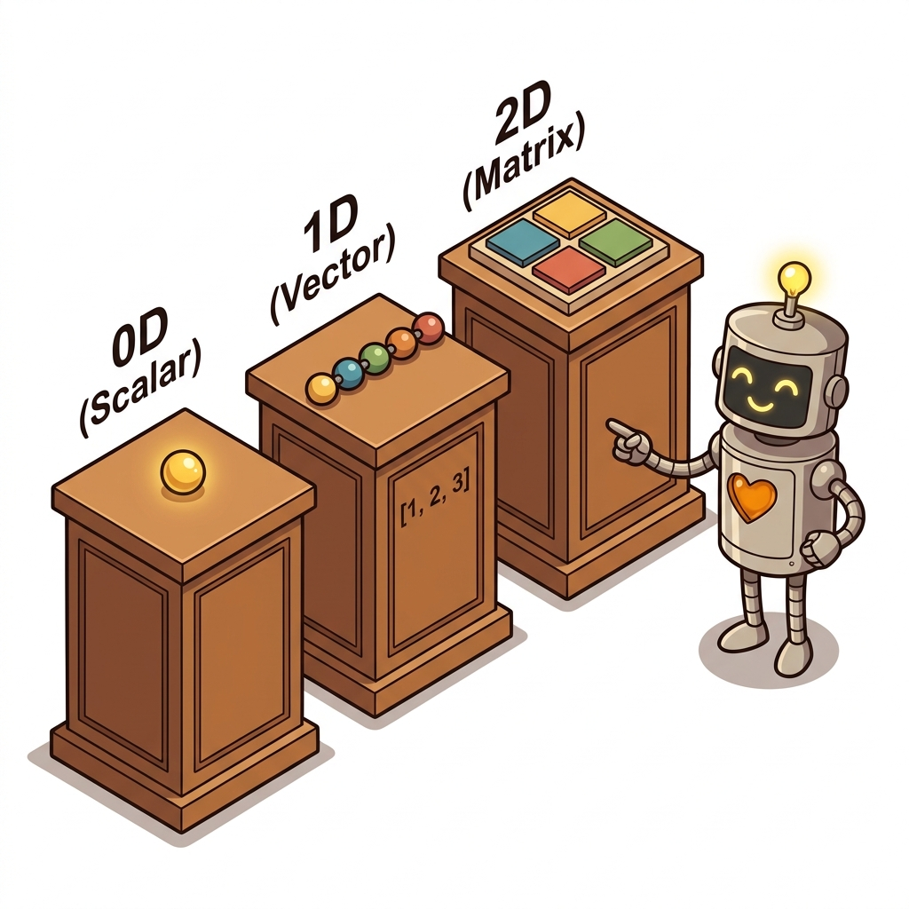
[강의 스크립트] 십일점일점삼 절에서는 다차원 배열의 연산을 다룹니다. 단일 숫자인 영차원 스칼라, 숫자들의 나열인 일차원 벡터, 그리고 행과 열로 이루어진 이차원 행렬까지, 머신러닝에서는 이 모든 다차원 배열을 텐서라는 개념으로 일괄 처리합니다.
1) 벡터의 내적 (Dot Product)
길이가 같은 두 벡터 a = (a1, …, an)과 b = (b1, …, bn)의 내적은 대응하는 원소끼리의 곱의 총합입니다:
a · b = a1b1 + a2b2 + … + anbn (식 11.1: 벡터의 내적)
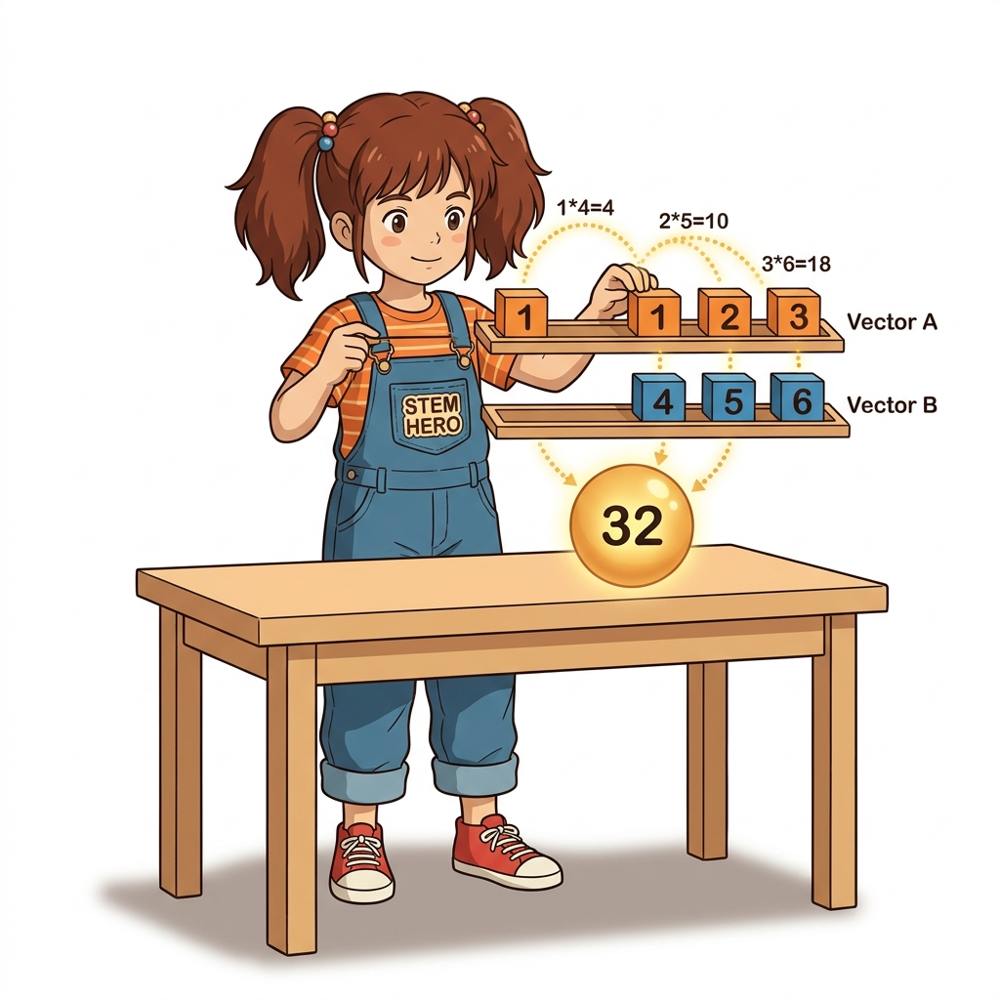
[강의 스크립트] 벡터의 내적은 두 벡터의 대응하는 원소끼리 곱한 뒤 모두 합산하는 연산입니다. 식 십일점일에서 보듯, 입력 신호와 가중치들의 곱을 하나로 합쳐 뉴런의 활성도를 결정하는 가장 기초적인 수학 블록입니다.
2) 행렬 곱과 차원 형상(Shape) 일치 규칙
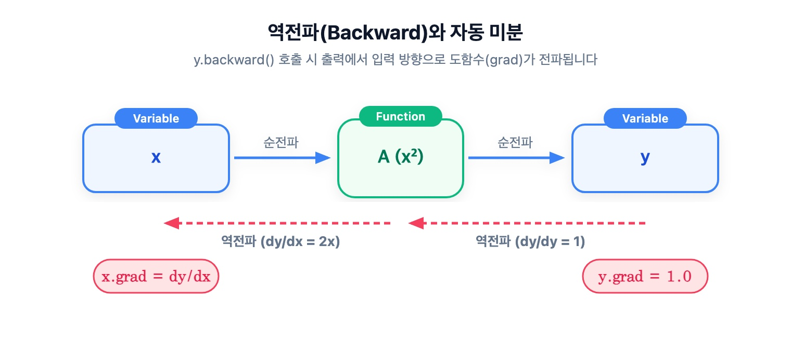
그림 11-1-4 행렬 곱 계산 방법. 왼쪽 행렬의 가로 행 벡터와 오른쪽 행렬의 세로 열 벡터 사이의 내적이 결과 행렬의 각 원소를 결정합니다.[강의 스크립트] 행렬의 곱셈은 왼쪽 행렬의 행 벡터와 오른쪽 행렬의 열 벡터 사이의 내적으로 각 원소가 결정됩니다. 그림 십일점일점사를 보시면 가로와 세로의 원소들이 짝을 맞추어 곱해지며 결과 행렬을 구성함을 알 수 있습니다.
행렬 곱이 유효하게 성립하려면 왼쪽 행렬의 열 수와 오른쪽 행렬의 행 수가 반드시 일치해야 합니다:
\[\text{행렬 A } (N \times K) \times \text{행렬 B } (K \times M) = \text{행렬 C } (N \times M)\]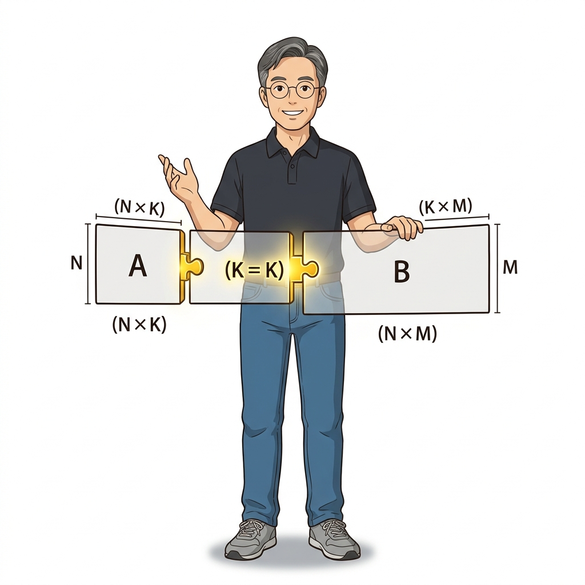
[강의 스크립트] 행렬 곱에서 가장 중요한 불변의 규칙은 차원 형상의 일치입니다. 왼쪽 행렬 에이의 열 수인 케이와 오른쪽 행렬 비의 행 수인 케이가 반드시 같아야만 곱셈이 성립하며, 결과 행렬은 엔 곱하기 엠 형상이 됩니다. 이 차원 규칙을 틀리면 딥러닝 코드에서 즉시 오류가 발생합니다.
DeZero에서는 dezero.functions의 matmul() 함수를 사용하여 벡터의 내적과 행렬 곱을 모두 처리합니다:
import numpy as np
from dezero import Variable
import dezero.functions as F
# 1. 벡터의 내적: [1*4 + 2*5 + 3*6] = 32
a = np.array([1, 2, 3])
b = np.array([4, 5, 6])
c = F.matmul(a, b)
print(c) # variable(32)
# 2. 행렬 곱: (2x2) x (2x2) = (2x2)
A = np.array([[1, 2], [3, 4]])
B = np.array([[5, 6], [7, 8]])
C = F.matmul(A, B)
print(C)
# variable([[19 22]
# [43 50]])
[강의 스크립트] 디제로에서는 펑션스 모듈의 맷멀 함수로 내적과 행렬 곱을 모두 처리합니다. 코드에서 보듯 일차원 벡터 에이와 비를 넣으면 스칼라 삼십이가 계산되고, 이 곱하기 이 정방 행렬들을 넣으면 해당 행렬 곱 결과가 베리어블 형태로 정확히 출력됩니다.
11.1.4 경사 하강법과 최적화 실습: 로젠브록 함수
이제 DeZero의 자동 미분을 이용해 유명한 최적화 벤치마크 문제인 로젠브록(Rosenbrock) 바나나 함수의 최솟값을 찾아봅시다:
y = 100 · (x1 - x02)2 + (x0 - 1)2 (식 11.2: 로젠브록 함수)
이 함수는 완만한 곡면 골짜기를 이루고 있어 최솟값을 찾기가 까다롭기로 유명합니다. 이론적인 정답 최솟값은 (x0, x1) = (1.0, 1.0)일 때 y = 0입니다.
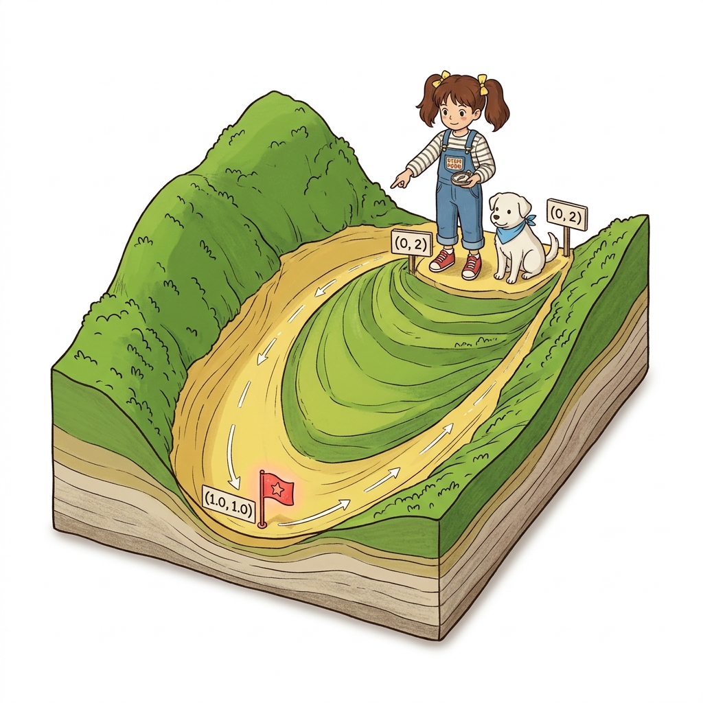
[강의 스크립트] 십일점일점사 절에서는 최적화 실습으로 로젠브록 바나나 함수를 다룹니다. 식 십일점이에 정의된 이 함수는 좁고 완만하게 굽은 골짜기를 형성하고 있어 경사 하강법 알고리즘의 수렴 성능을 시험하는 대표적인 벤치마크 함수입니다. 이론적 최솟값은 엑스영과 엑스일이 모두 일점영일 때 와이는 영입니다.
1) 특정 지점에서의 기울기(Gradient) 계산
import numpy as np
from dezero import Variable
def rosenbrock(x0, x1):
return 100 * (x1 - x0 ** 2) ** 2 + (x0 - 1) ** 2
x0 = Variable(np.array(0.0))
x1 = Variable(np.array(2.0))
y = rosenbrock(x0, x1)
y.backward()
print("x0의 편미분:", x0.grad, "x1의 편미분:", x1.grad)
출력 결과:
x0의 편미분: variable(-2.0) x1의 편미분: variable(400.0)
이때 두 편미분을 묶은 벡터 (-2.0, 400.0)를 기울기 벡터(Gradient)라고 부르며, 함숫값을 가장 가파르게 증가시키는 방향을 나타냅니다.
[강의 스크립트] 초깃값 영점영과 이점영에서 와이 점 백워드를 호출하면 편미분 값이 마이너스 이점영과 사백점영으로 계산됩니다. 이 기울기 벡터는 함숫값이 가장 가파르게 치솟는 방향을 의미합니다.
2) 경사 하강법(Gradient Descent) 반복 루프
함숫값을 최소화하려면 기울기의 정반대 방향(-grad)으로 변수들을 조금씩 이동시키면 됩니다:
\[x \leftarrow x - \text{lr} \cdot \frac{\partial y}{\partial x}\]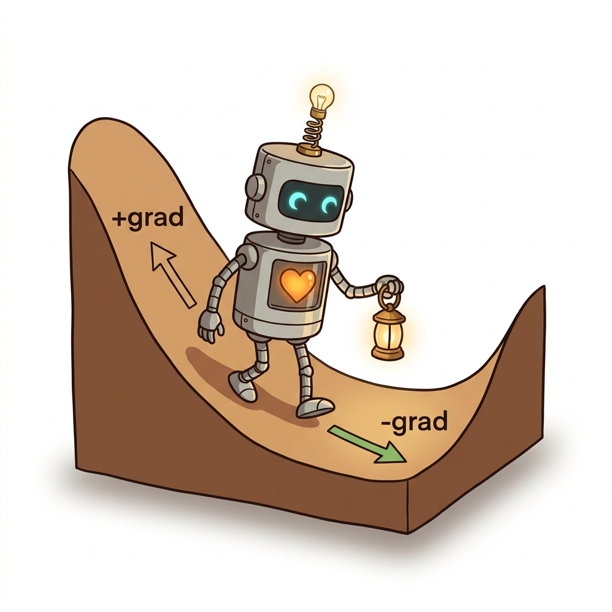
[강의 스크립트] 우리의 목표는 함숫값을 최소화하는 것이므로, 기울기의 정반대 부호 방향으로 학습률만큼 곱해 변수를 갱신합니다. 수식에서 보듯 매 걸음마다 오차면의 가장 가파른 내리막길을 따라 점진적으로 하강하는 원리입니다.
x0 = Variable(np.array(0.0))
x1 = Variable(np.array(2.0))
iters = 10000 # 경사 하강 반복 횟수
lr = 0.001 # 학습률 (보폭)
for i in range(iters):
y = rosenbrock(x0, x1)
# ❶ 중요: 이전 스텝에서 누적된 미분값을 깨끗이 초기화!
x0.cleargrad()
x1.cleargrad()
# ❷ 역전파로 현재 지점의 기울기 계산
y.backward()
# ❸ 가중치 파라미터 갱신 (계산 그래프를 만들지 않기 위해 .data로 연산)
x0.data -= lr * x0.grad.data
x1.data -= lr * x1.grad.data
print("최종 최적화 결과:", x0, x1)
출력 결과:
최종 최적화 결과: variable(0.9944984367782456) variable(0.9890050527419593)
초기값 (0.0, 2.0)에서 출발한 변수들이 1만 번의 스텝을 거쳐 정답인 (1.0, 1.0)에 극도로 근접했음을 확인할 수 있습니다!
[강의 스크립트] 전체 최적화 루프를 살펴봅시다. 반복문 안에서 반드시 클리어그레드로 기존 기울기를 비워주고, 백워드로 새 기울기를 구한 뒤 변수 데이터에서 학습률 보폭만큼 빼줍니다. 만 번의 반복 후 결과가 정답인 일점영에 매우 정밀하게 수렴했음을 확인할 수 있습니다.
[!WARNING] 왜
cleargrad()가 반드시 필요할까요? DeZero와 PyTorch는 여러 연산의 기울기를 누적할 수 있도록backward()를 부를 때마다 기존.grad값에 새 미분값을 더하는 방식(+=)으로 설계되어 있습니다. 따라서 매 루프마다cleargrad()(파이토치는zero_grad())를 호출하여 이전 스텝의 기울기를 비워주지 않으면 기울기가 걷잡을 수 없이 누적되어 학습이 엉망으로 폭발합니다!
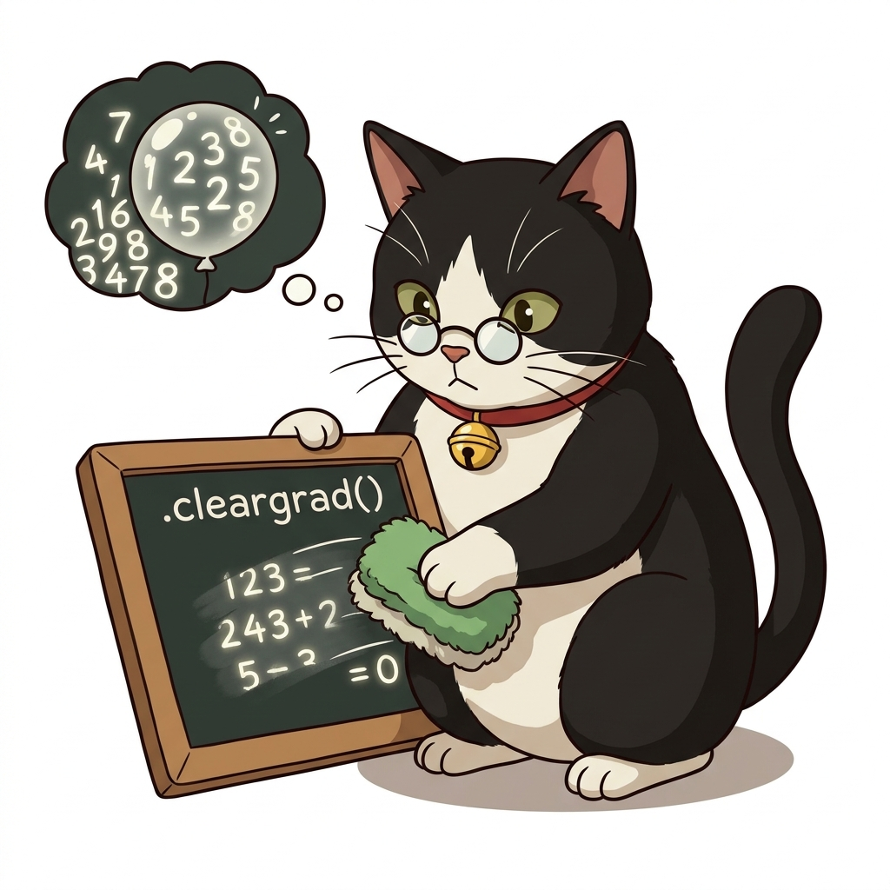
[강의 스크립트] 여기서 가장 중요한 주의사항이 있습니다. 왜 클리어그레드가 필수일까요? 디제로와 파이토치는 미분값을 기존 메모리에 누적하여 더하도록 설계되어 있습니다. 따라서 루프 시작 전 지우개로 칠판을 지우듯 클리어그레드를 부르지 않으면 기울기가 눈덩이처럼 불어나 학습이 완전히 발산해 버립니다.
이로써 우리는 인공신경망 학습의 핵심 무기인 계산 그래프, 역전파(backward), 기울기 초기화(cleargrad), 경사 하강 갱신의 전 과정을 손에 쥐었습니다. 다음 절에서는 이를 활용하여 머신러닝의 기초인 선형 회귀(Linear Regression)를 정복해 봅시다!
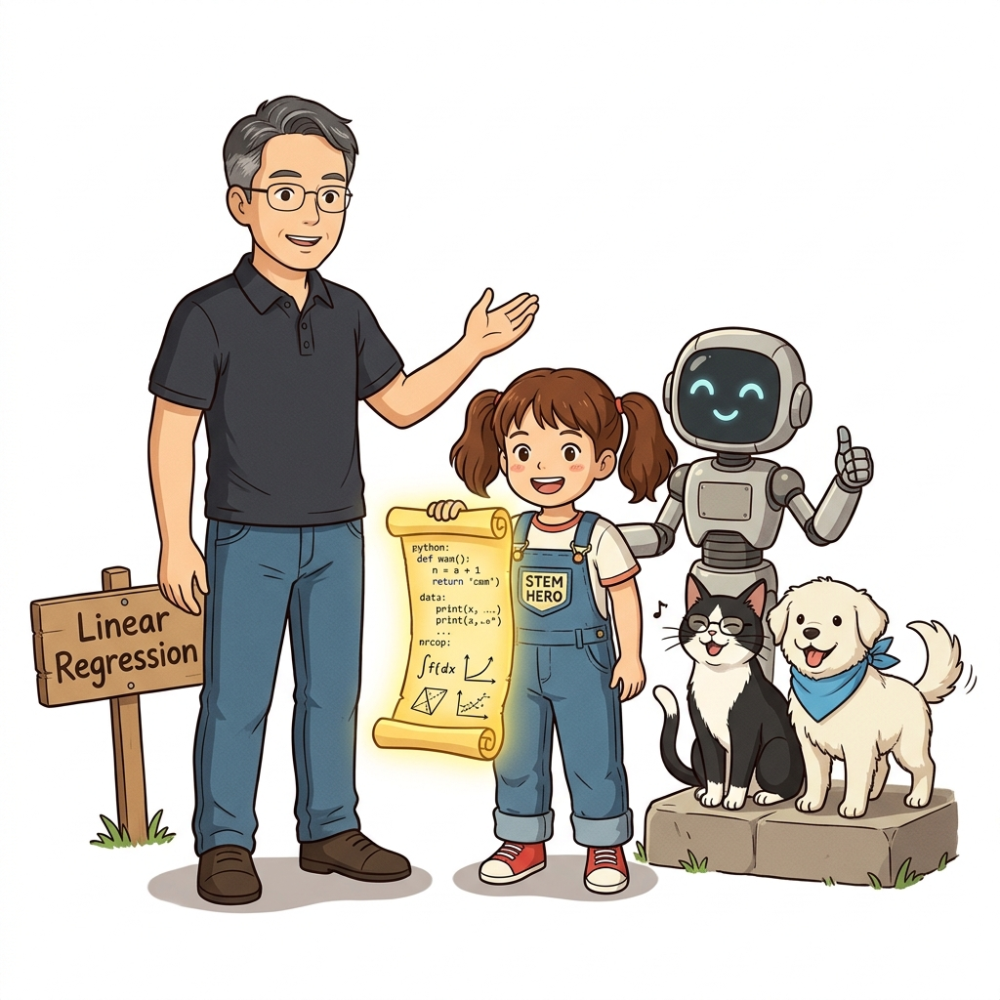
[강의 스크립트] 이로써 계산 그래프, 자동 미분 백워드, 기울기 초기화 클리어그레드, 경사 하강 갱신이라는 딥러닝의 사대 핵심 무기를 모두 갖추었습니다. 다음 절에서는 이 원리를 활용하여 데이터로부터 스스로 관계를 학습하는 선형 회귀의 세계로 나아가겠습니다.